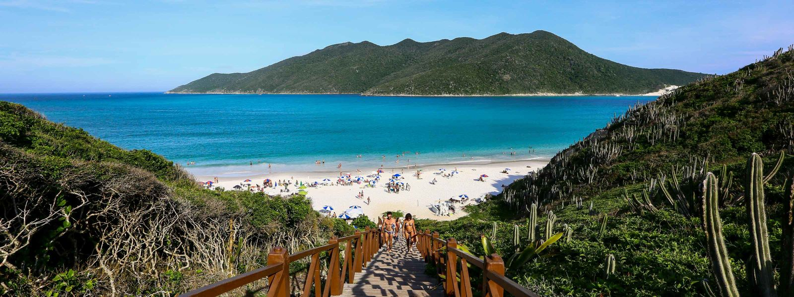

Arraial do Cabo, localizado na Região dos Lagos do Rio de Janeiro, é um destino turístico famoso por suas praias deslumbrantes e águas cristalinas. Conhecida como a "Capital do Mergulho", a cidade atrai visitantes com sua rica biodiversidade marinha, tornando-se um local ideal para snorkeling e mergulho. As praias, como a Praia do Farol e a Praia dos Anjos, são reconhecidas por sua beleza natural e paisagens de tirar o fôlego. Além disso, Arraial do Cabo oferece trilhas, passeios de barco e uma deliciosa gastronomia à base de frutos do mar. Com seu clima agradável e atmosfera acolhedora, é um verdadeiro paraíso para os amantes da natureza e do lazer.
Conheça um pouco mais sobre Arraial do Cabo no link a baixo
Click aqui